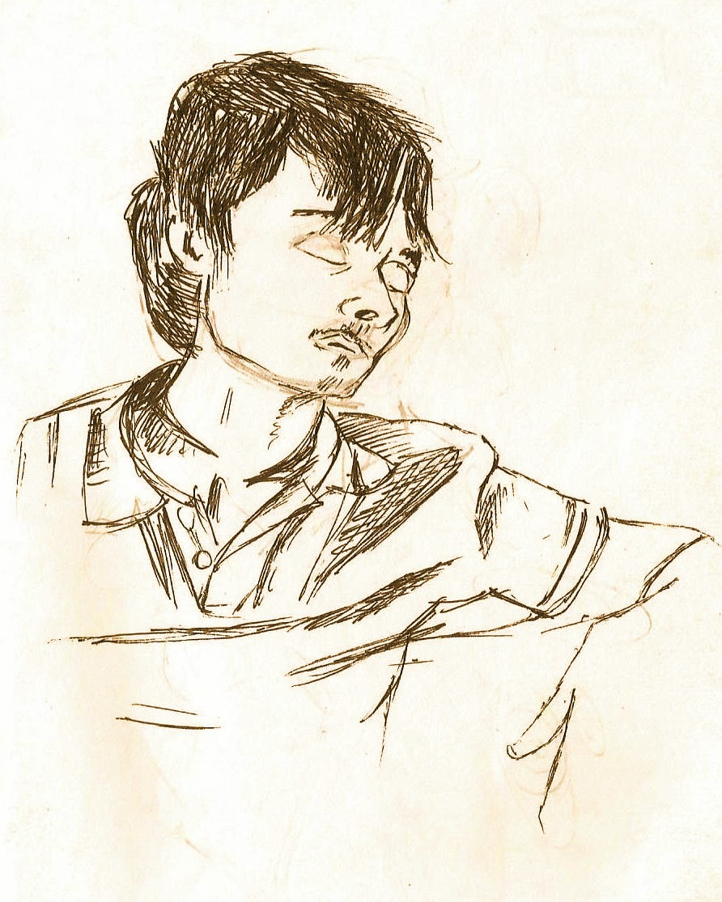

I am a research scholar (JRF) at Chennai Mathematical Institute, pursuing a PhD in Theoretical Computer Science. I am broadly interested in understanding how algebraic, arithmetic, and logical structure shapes computation. My current interests include Automata Theory, Weighted Automata, Logic and decision problems such as the Skolem Problem. I wish to work in environments where knowledge is pursued as an end in itself, and where institutional incentives are not dominated by engineering, commercialization, or industrial application. I believe that mathematics is under no obligation to be useful to humanity. It is best pursued for its own sake - just like music.